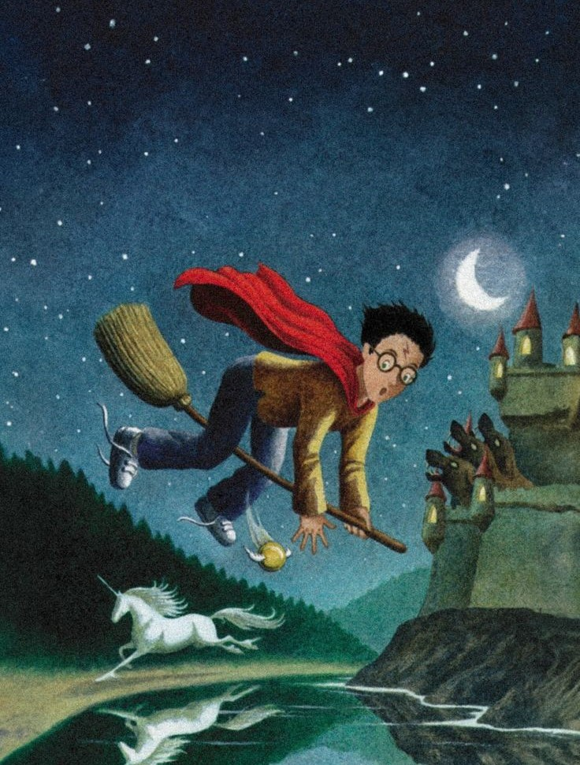
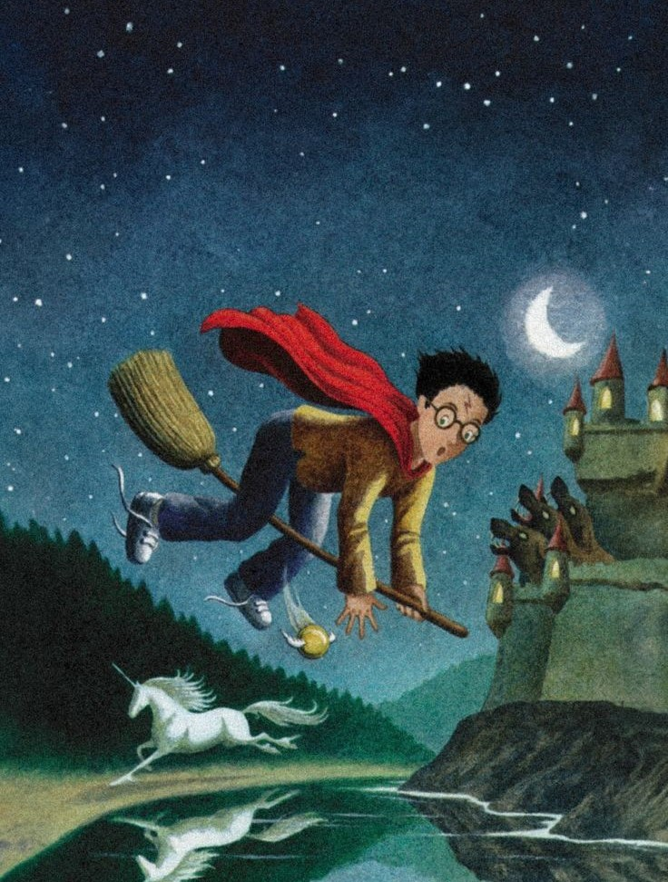

¡Dato curioso del libro!
El manuscrito fue rechazado por 12 editoriales antes de ser aceptado por Bloomsbury. J.K. Rowling pasó años buscando una editorial que creyera en su historia.
Hermione
El personaje de Hermione Granger está inspirado en la infancia de J.K. Rowling. Al igual que Hermione, Rowling era una alumna muy aplicada y amante de los libros.

Sobre la película
La adaptación cinematográfica de "Harry Potter y la piedra filosofal" se estrenó en 2001, recaudando más de $970 millones de dólares en todo el mundo, convirtiéndose en una de las películas más taquilleras de la historia.
"Harry Potter y la piedra filosofal" es el primer libro de la famosa serie de fantasía escrita por la autora británica J.K. Rowling. Fue publicado por primera vez en 1997 y es conocido en algunas regiones (como en Estados Unidos) como "Harry Potter and the Sorcerer's Stone".
La historia sigue a un joven huérfano llamado Harry Potter, quien descubre en su undécimo cumpleaños que es un mago. Vive con sus malvados tíos, los Dursley, hasta que recibe una carta que lo invita a asistir al Colegio Hogwarts de Magia y Hechicería. En Hogwarts, Harry hace nuevos amigos, como Ron Weasley y Hermione Granger, y descubre que sus padres murieron a manos del malvado mago Lord Voldemort. Harry también se entera de que sobrevivió al ataque de Voldemort cuando era bebé, lo que lo convirtió en una figura famosa en el mundo mágico.
El libro explora temas como la amistad, la valentía, la lucha entre el bien y el mal, y el descubrimiento de uno mismo. También introduce el mundo mágico, incluyendo criaturas, hechizos y lugares como el castillo de Hogwarts. "Harry Potter y la piedra filosofal" es el comienzo de una saga que sigue a Harry a lo largo de siete libros, enfrentando desafíos cada vez más difíciles mientras descubre la verdad sobre su pasado y su conexión con Voldemort.
 
